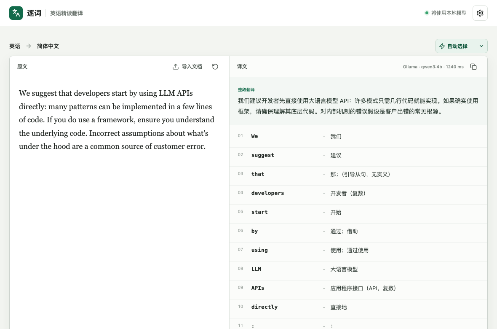

Word by word, still in context
Hood is not limited to “engine cover.” In under the hood, Wordwise explains that it refers to an underlying mechanism.

Source build available · Up to 15 signed-beta waitlist spots
Read technical English without losing the words.
Select text in any macOS app and press ⌥ T to see a full Chinese translation and context-aware explanations for every word, number, and punctuation mark.
Available today
The signed and notarized installer is not ready yet. Developers with Node.js 22.13+, Rust, and Xcode Command Line Tools can run the current macOS beta locally and inspect every line under the MIT license.
View build instructionsOne frequent reading problem
Hood is not limited to “engine cover.” In under the hood, Wordwise explains that it refers to an underlying mechanism.
Model output is checked against deterministic tokens, so words cannot be silently dropped, merged, or rewritten.
Select English in the current app and use one shortcut instead of repeatedly switching tabs, copying, and pasting.
Founder Beta waitlist
After signing and notarization are complete, we will review registrations in order and invite up to 15 eligible macOS users who read technical English at least three days a week. The first week is free. On day seven, if Wordwise is useful enough to keep, decide whether to make a one-time CNY 39 Founder payment.
Not “do you like the idea?”